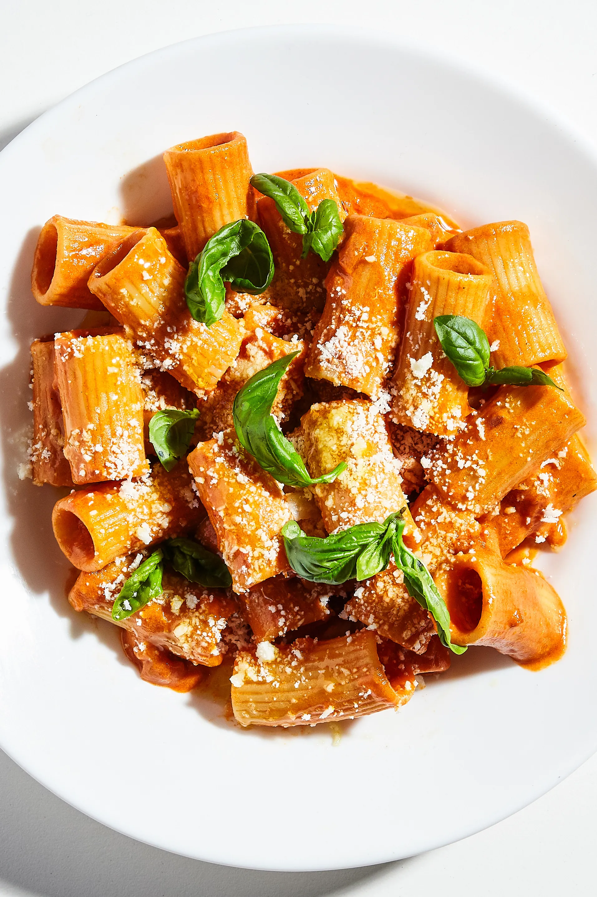

Penne alla vodka

A creamy tomato and vodka based pasta sauce perfect for any meal
This recipe uses aromatics combined with tomato paste and vodka, and a little bit of spice,
to create a perfect blend of creamy deliciousness.
Ingredients
- 450g of pasta (penne or rigatoni preferably)
- 1 cup of heavy cream
- 1/3 cup of vodka
- 3 cloves of garlic, minced
- 2 shallots, minced
- 1 tbsp butter
- 2 tsp red pepper flakes
- lots of Parmesan cheese
- 4.5-oz tube of tomato paste
- salt and pepper to taste
Instructions
- melt the butter in a pan over medium heat and saute garlic and shalots until soft, about 5 mins
- add red pepper flakes and tomato paste, saute another 3-4 mins
- add vodka to deglaze, scrape up the bottom of the pan until alcohol has boiled off
- add heavy cream and salt and pepper, stir to combine for creamy sauce, let it come to boil then turn off the heat
- add parmesan cheese, as much as you can grate or to taste, and stir to combine
- add 450g/1lb of pasta to boiling salted water and cook according to package instructions
- combine everything, serve with more parmesan and optionaly chopped basil, and enjoy!